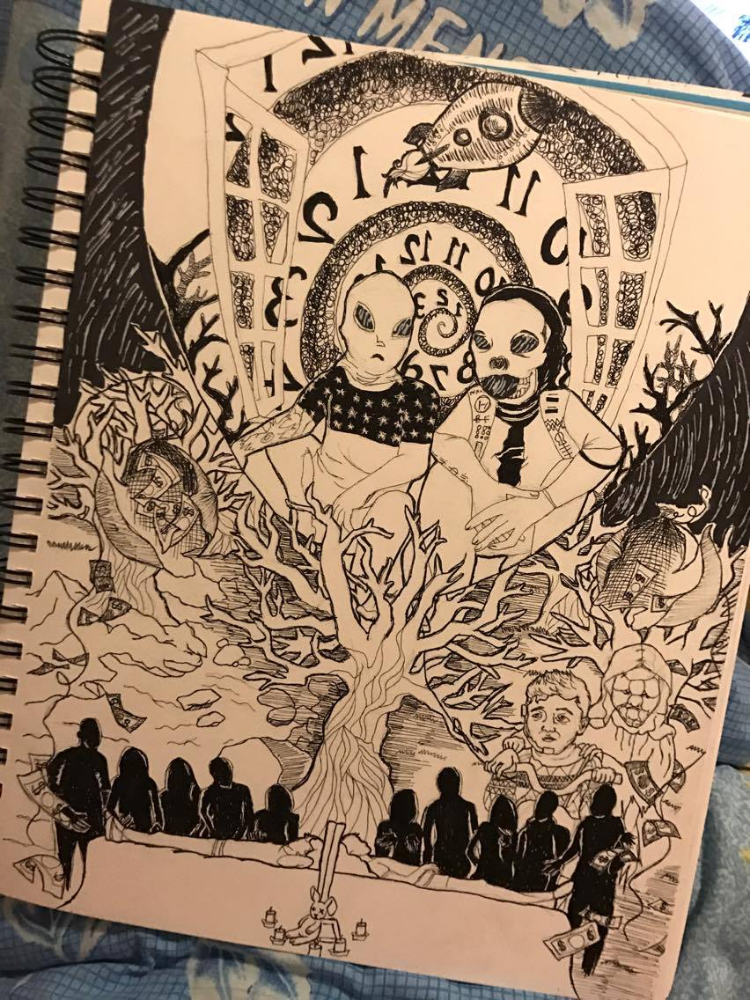
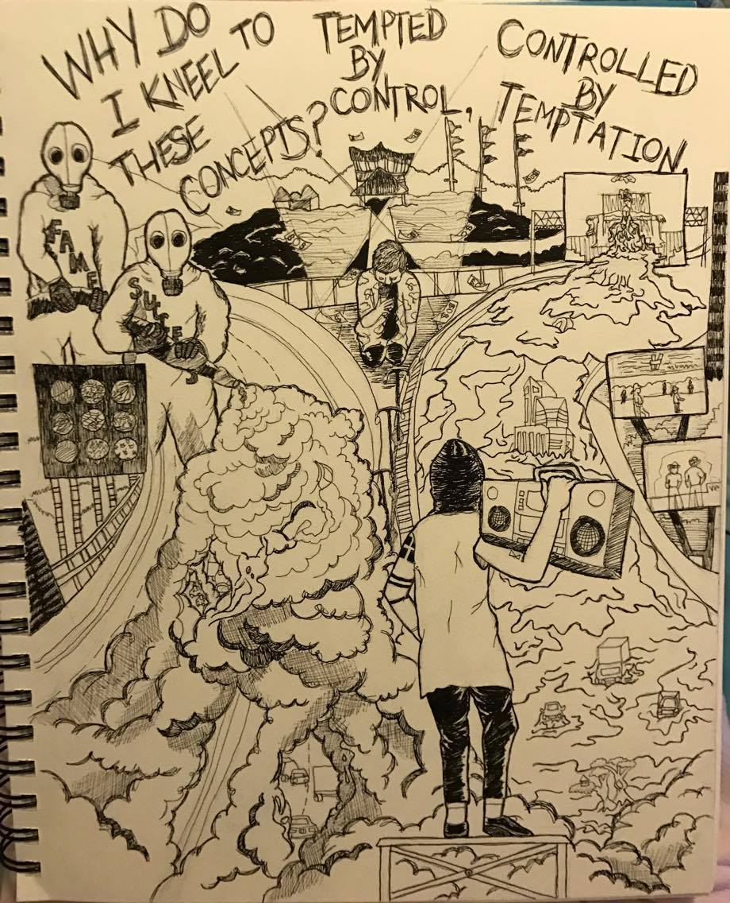
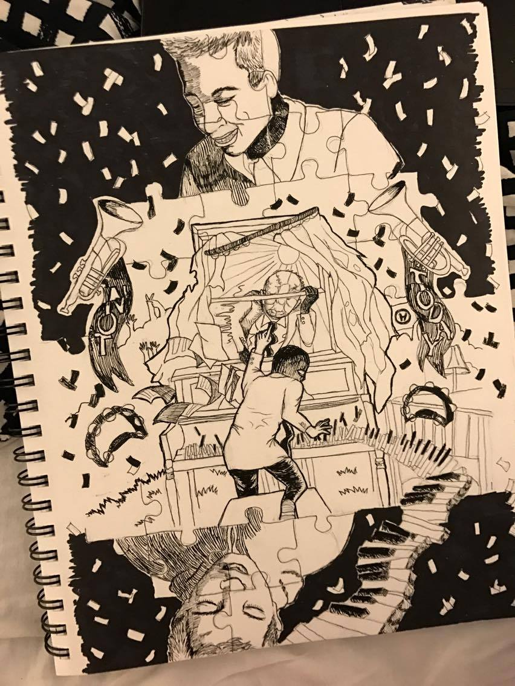

Daily Habits

I made up a daily habit to follow for a week. Decided to make drawings of my interpretation of songs of an album. This is for the song "Ride" by twenty one pilots from the album Blurryface.

I made up a daily habit to follow for a week. Decided to make drawings of my interpretation of songs of an album. This is for the song "We Don't Believe What's on T.V." by twenty one pilots from the album Blurryface.
I made up a daily habit to follow for a week. Decided to make drawings of my interpretation of songs of an album. This is for the song "Stressed Out" by twenty one pilots from the album Blurryface.
I made up a daily habit to follow for a week. Decided to make drawings of my interpretation of songs of an album. This is for the song "Lane Boy" by twenty one pilots from the album Blurryface.
Explain your work of art. For example, what did you make it with? Photoshop, colored pencils, etc.? What were the assignment parameters? Why did you make it the way you did?